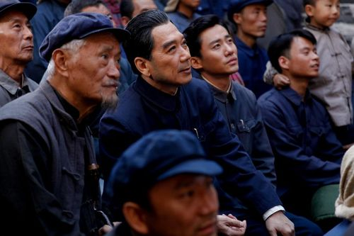
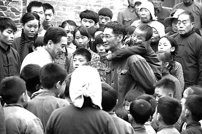
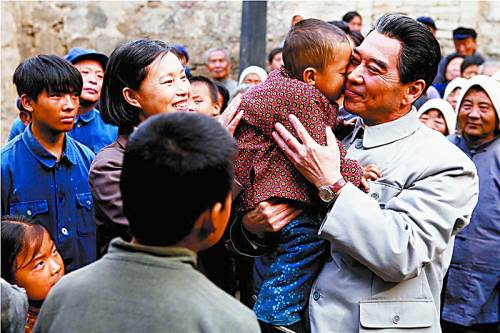

基本信息
《周恩来的四个昼夜》是由陈力执导，孙维民领衔主演，何伟、储智博、牛犇、郝岩、柏青等人联合主演的剧情片，于2013年7月16日在中国大陆上映。
该片是以二十世纪六十年代中国三年自然灾害为背景，讲述了在严重灾荒、苏联逼债的窘迫日子里，作为共和国总理的周恩来，来到革命老区河北邯郸伯延公社考察调研，度过难忘的四个昼夜的故事。

剧情简介
1961年，全党大兴调查研究之风。党中央领导人身体力行，组织调查组或亲自深入实际进行调查研究。1961年5月3日，周恩来（孙维民饰）总理一行来到伯延时，新中国正面临旱灾和饥荒，伯延沿路的枯树便是无声的证明。然而，从公社主任到老乡们，没有人愿意告诉总理饥饿的实情，大家只有一个朴素的想法，那就是不给国家添麻烦。
一次座谈会，社员黑压压挤了一大屋。开始大家不敢说话，周恩来笑着指指身后墙上的画像（当时普遍张贴七位中央常委的画像）：我叫周恩来，就是墙上的那个人。你们看像不像，这次我来是想听大家的心里话，有话只管说，说错了也不要紧。蹲在总理身边闷头吸烟的村民张二廷（储智博饰）在总理问到他时，头一个跳起身“放炮”：要说食堂好，全是假话。食堂吃不饱。还愣冲冲来了一句：你要是糊弄我们，总理，再过两三年，你也会饿死的。周恩来闻言猛然一震，沉凝片刻，眼里噙满泪水：还是我这个总理没当好，我先道歉，对不起大家。四天四夜里，周总理走访了几十户农民家庭，与乡亲们同吃同住同劳动，在走访调研考察中，了解了真实情况，伯延由此成为全国第一个取消集体食堂的人民公社。

《新湘评论》评
《周恩来的四个昼夜》片中没有明星，没有花哨的宣传，没有眩目的技术手段，周恩来乡村调查的四个昼夜，以朴实动人的真情和积极的现实意义告诉人们，国家就像个大家庭，谁家都有出问题有困难的时候，只有每个人都替国家分担，国家才能走向强大。这种人民对于国家的信任和体谅，与总理同老百姓相处的真情真意，让说真话、办实事承载了千钧之重。
《湖北日报》评
《周恩来的四个昼夜》是一部真实动人、近乎于纪录片风格的电影，通过“一个摄影师”的拍照，深情地讲述了一位伟人的平常之事，温暖和激动着我们的心灵。在短短的时空里，影片以真实的历史，浓重的笔墨，真挚的情感和生活细节，集中展示了我国第一代领导人坚持信仰、坚持真理、深入群众、务实清廉、实事求是、调查研究、与百姓同甘共苦、血脉相连的宝贵精神。影片以小视角折射大情怀。周恩来在伯延的四个昼夜里，没有发生轰轰烈烈的大事，随着他走村串户的脚步，观众们进入了一位伟人丰富的情感世界。
当看到伯延的村庄树木光秃、灰尘飞扬，总理脸上掠过一丝忧愁。当看到伯延公社为他精心准备的午餐，周总理刚要跨进门槛的脚又退了回来，和大家坐在一起喝稀糊糊，甚至连一个窝窝头都分一半给壮劳力吃，他的平民意识让人潸然泪下。当看到他在座谈会上带头为说实话的张二廷鼓掌，并深情地说了一番话，将党心与民心紧紧相连。当看到周总理陷入深深的自责，说自己“不称职”时，人们都为这样的好总理肃然起敬。该片正是通过这些感人至深的生活片段，将一代伟人的平民意识表现得淋漓尽致。在这里，伟人的高大不是高山仰止，而是他的身影牵动着人们平视的目光，在与芸芸众生一起行进中，走进情感的制高点，以博大和开阔的情怀，承担着对国家的忠诚和责任。 影片对伯延干部和群众的描写，也是很有新意的。这些生活在饥饿线上的人，面对周总理的到来，虽然开始时有这样那样的心态，其实内心都有一种国家情怀在支撑，那就是怕说出灾情，给毛主席、周总理心里添堵，给国家肩膀上添重。这些老区人民宁愿自己饿着、苦着，也要为党和国家分忧。这种平民的国家情怀与伟人的平民意识始终在影片中交织在一起，成为历史音响中的和弦，在观众心中流淌。该片兼顾了思想性和观赏性，既描写了真实的时代背景，在很大程度上还原了时代生活，发出了对历史的思考之音。同时又能通过许多生动的细节，造成情感的冲击波。例如，连第奶奶特地为周恩来做拽面时的情感投入，周总理提出要收养二廷的一个孩子时，二廷脸上的复杂表情。这些“戏眼”都是很好的艺术创作之举，在不事张扬中，给人很多想象。该片是朴素的，具有一种朴素之美，这种影像的格调，很符合故事的意境。“看似寻常最奇崛”，朴素之美所达到的艺术境界，是一种很美的造化。

1905电影网评
《周恩来的四个昼夜》作为一部主旋律影片，展现了第一代中央领导人集体深入基层、深入群众、扎实调研、体察民情的优良作风，这种时刻将人民群众的利益放在第一位的精神非常值得永久学习。而且，电影整体制作都很精良，故事也很感人，在传统风格上加入了很多贴近百姓生活的内容，所以该片不仅能够唤起老一代革命者的回忆，又能让时下的年轻人感到亲切，具有较高的现实意义。